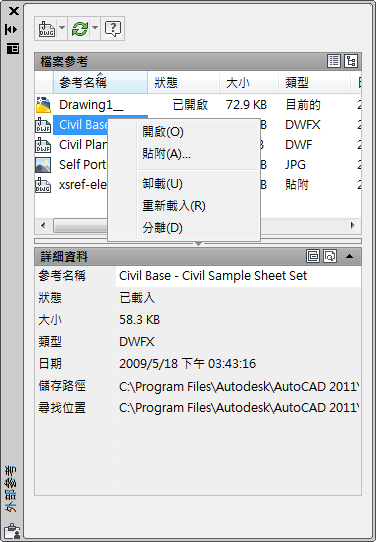

說明：
「外部參考」選項板可組織、顯示和管理參考的檔案，例如 DWG 檔 (外部參考)、DWF、DWFx、PDF 或 DGN 參考底圖以及點陣式影像。
僅 DWG、DWF、DWFx、PDF 和點陣式影像檔可以直接從「外部參考」選項板中開啟。
「外部參考」選項板包含多個按鈕，分為兩個窗格。上面的窗格稱為「檔案參考」窗格，可以在清單或樹狀結構中顯示檔案參考。快顯功能表和功能鍵提供了處理檔案的選項。下面的窗格稱為「詳細資料」/「預覽」窗格，可以顯示選取的檔案參考的性質或縮圖預覽。
注意事項：
使用「外部參考」選項板時，建議您打開自動隱藏功能或錨定選項板。這樣，當您從選項板上移開游標時，選項板會自動隱藏。